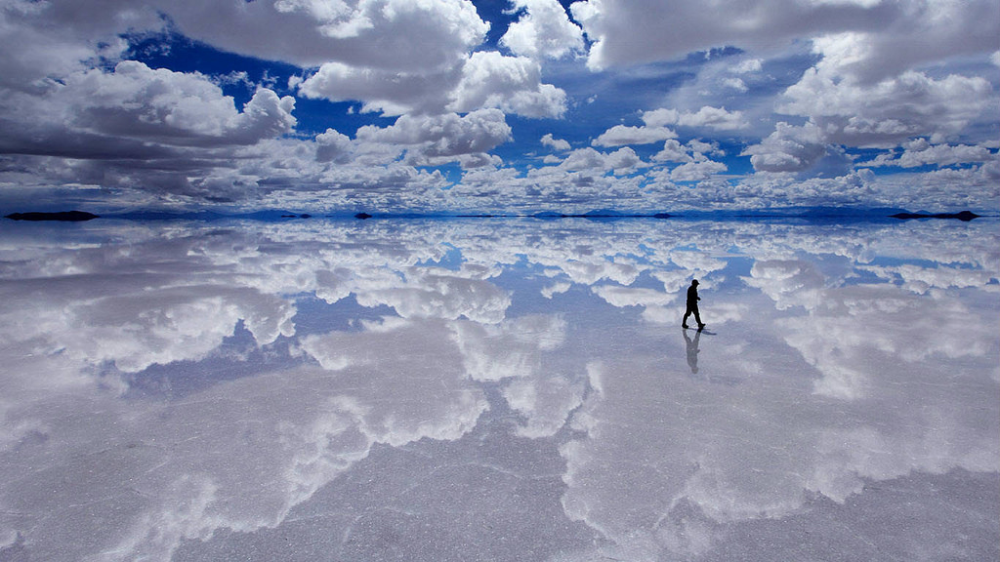

Esto es un Aurora polar
Este es el resultado de la interacción entre el viento solar y el campo magnético de la Tierra.

Salar de Uyuni con agua
Salar de Uyuni con agua, convertido en un espejo del cielo. Esto ocurre en temporada de lluvias, entre enero y marzo, en el llamado “invierno boliviano”.

el río de los cinco colores ubicado en colombia
De la Serranía de la Macarena bajan varias corrientes de agua como caño Indio, caño Yarumales, y caño Canoas, pero sólo Caño Cristales, el río de los cinco colores ubicado en colombia , ha sido llamado 'el más hermoso del mundo'.